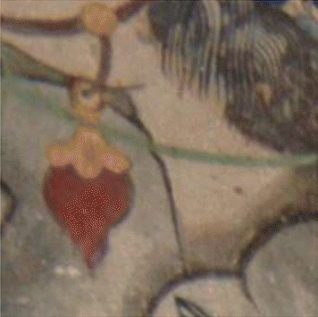
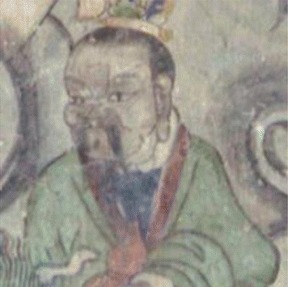
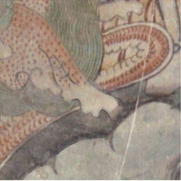
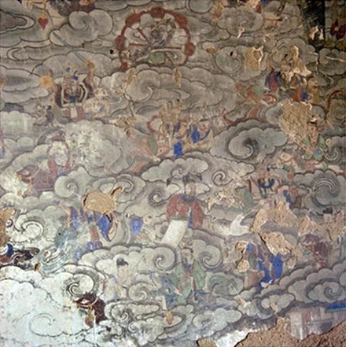

← 返回大殿 / Back to the hall壁画图像与出处
Image records
参考照片，非墙面实测复原 / Reference photographs, unverified placement下列照片来自开放学术论文中的原始图像区域。四个展示位置是体验设计，不代表照片原来就在相应墙面，也不证明照片题材对应墙面画题。图版像素有限，不是高清扫描。
These published photographs are reference samples. Their placement in the four wall zones is illustrative. Neither their original wall positions nor their correspondence to the wall themes has been verified.
2018 年论文将对象称为开化寺宋代壁画，但地理描述写为太原蒙山，与本项目高平开化寺的地点不一致。因此本项目保留出处歧义，不把这些图版作为已核实的高平原墙面档案。
The 2018 paper's geographic description conflicts with this project's Gaoping location. The source attribution remains uncertain; these are not verified Gaoping wall records.
西壁 · 参考细节 A / West reference A

Cao, Jianfang; Li, Yanfei; Zhang, Qi; Cui, Hongyan (2019). Restoration of an ancient temple mural by a local search algorithm of an adaptive sample block. Heritage Science 7, 39. Fig. 5, original row (a), panel A. 论文 / Article© The Author(s), 2019. CC BY 4.0. 修改：裁去标签及其他实验图，转换为 WebP；保留原照片内容，未作修复或 AI 补绘。Changes: cropped from the original-photo region and converted to WebP; no inpainting or invented restoration.东壁 · 参考细节 C / East reference C

Cao, Jianfang; Li, Yanfei; Zhang, Qi; Cui, Hongyan (2019). Restoration of an ancient temple mural by a local search algorithm of an adaptive sample block. Heritage Science 7, 39. Fig. 5, original row (a), panel C. 论文 / Article© The Author(s), 2019. CC BY 4.0. 修改：裁去标签及其他实验图，转换为 WebP；保留原照片内容，未作修复或 AI 补绘。Changes: cropped from the original-photo region and converted to WebP; no inpainting or invented restoration.北壁西侧 · 参考细节 B / Northwest reference B

Cao, Jianfang; Li, Yanfei; Zhang, Qi; Cui, Hongyan (2019). Restoration of an ancient temple mural by a local search algorithm of an adaptive sample block. Heritage Science 7, 39. Fig. 5, original row (a), panel B. 论文 / Article© The Author(s), 2019. CC BY 4.0. 修改：裁去标签及其他实验图，转换为 WebP；保留原照片内容，未作修复或 AI 补绘。Changes: cropped from the original-photo region and converted to WebP; no inpainting or invented restoration.北壁东侧 · 参考图版 / Northeast reference panel

Cao, Jianfang; Li, Yanfei; Cui, Hongyan; Zhang, Qi (2018). Improved region growing algorithm for the calibration of flaking deterioration in ancient temple murals. Heritage Science 6, 67. Fig. 8(a), top-left original photograph. 论文 / Article© The Author(s), 2018. CC BY 4.0. 修改：裁去标签及其他实验图，转换为 WebP；保留原照片内容，未作修复或 AI 补绘。Changes: cropped from the original-photo region and converted to WebP; no inpainting or invented restoration.空间模型 / Spatial model
殿内尺寸、立柱、佛坛与图像位置均为空间示意，不能用于考古或测绘推断。对照复原仅在存在可溯源的配套复原图时启用。
Geometry is schematic. Altar and pillars occlude the photographs in the 3D scene. A restoration comparison requires a documented paired image; none is currently supplied.
Three.js 0.180.0 is distributed locally under the MIT license.